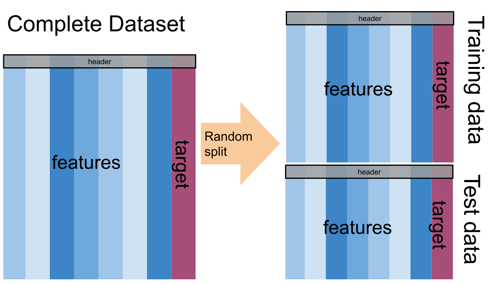

11. Intro to ML & Naive Bayes#
We’re going to approach machine learning from the perspective of modeling for a few reasons:
model based machine learning streamlines understanding the big picture
the model way of interpreting it aligns well with using sklearn
thinking in terms of models aligns with incorporating domain expertise, as in our data science definition
this paper by Christopher M. Bishop, a pioneering ML researcher who also wrote one of a the widely preferred graduate level ML textbooks, details advantages of a model based perspective and a more mathematical version of a model based approach to machine learning. He is a co-author on an introductory model based ML
In CSC461: Machine Learning, you can encounter an algorithm focused approach to machine learning, but I think having the model based perspective first helps you avoid common pitfalls.
11.1. What is a Model?#
A model is a simplified representation of some part of the world. A famous quote about models is:
11.2. All models are wrong, but some are useful –George Box[^wiki]#
11.3. In machine learning, we use models, that are generally statistical models.#
A statistical model is a mathematical model that embodies a set of statistical assumptions concerning the generation of sample data (and similar data from a larger population). A statistical model represents, often in considerably idealized form, the data-generating process wikipedia
read more in theModel Based Machine Learning Book
11.4. Models in Machine Learning#
11.5. Starting from a dataset, we first make an additional designation about how we will use the different variables (columns). We will call most of them the features, which we denote mathematically with \(\mathbf{X}\) and we’ll choose one to be the target or labels, denoted by \(\mathbf{y}\).#
The core assumption for just about all machine learning is that there exists some function \(f\) so that for the \(i\)th sample
11.6. \(i\) would be the index of a DataFrame#
11.7. Types of Machine Learning#
Then with different additional assumptions we get different types of machine learning:
if both features (\(\mathbf{X}\)) and target (\(\mathbf{y}\)) are observed (contained in our dataset) it’s supervised learning code
if only the features (\(\mathbf{X}\)) are observed, it’s unsupervised learning code

Further Reading
sklearn provides a popular flowchart for choosing a specific model
11.7.1. Supervised Learning#
we’ll focus on supervised learning first. we can take that same core assumption and use it with additional information about our target variable to determine learning task we are working to do.
if \(y_i\) are discrete (eg flower species) we are doing classification
if \(y_i\) are continuous (eg height) we are doing regression
11.8. Machine Learning Pipeline#
To do machine learning we start with training data which we put as input to the learning algorithm. A learning algorithm might be a generic optimization procedure or a specialized procedure for a specific model. The learning algorithm outputs a trained model or the parameters of the model. When we deploy a model we pair the fit model with a prediction algorithm or decision algorithm to evaluate a new sample in the world.
In experimenting and design, we need testing data to evaluate how well our learning algorithm understood the world. We need to use previously unseen data, because if we don’t we can’t tell if the prediction algorithm is using a rule that the learning algorithm produced or just looking up from a lookup table the result. This can be thought of like the difference between memorization and understanding.
When the model does well on the training data, but not on test data, we say that it does not generalize well.

11.9. Let’s Practice:#
First machine learning model: Naive bayes
import pandas as pd
import seaborn as sns
import numpy as np
from sklearn.model_selection import train_test_split
from sklearn.naive_bayes import GaussianNB
from sklearn.metrics import confusion_matrix, classification_report, roc_auc_score,accuracy_score
iris_df = sns.load_dataset('iris')
To start we will look at the data
iris_df.sample(5)
| sepal_length | sepal_width | petal_length | petal_width | species | |
|---|---|---|---|---|---|
| 124 | 6.7 | 3.3 | 5.7 | 2.1 | virginica |
| 115 | 6.4 | 3.2 | 5.3 | 2.3 | virginica |
| 129 | 7.2 | 3.0 | 5.8 | 1.6 | virginica |
| 95 | 5.7 | 3.0 | 4.2 | 1.2 | versicolor |
| 136 | 6.3 | 3.4 | 5.6 | 2.4 | virginica |

We’re trying to build an automatic flower classifier that, for measurements of a new flower returns the predicted species. To do this, we have a DataFrame with columns for species, petal width, petal length, sepal length, and sepal width. The species is what type of flower it is the petal and sepal are parts of the flower.
Note
This cell is hidden because it it not necessary for the narrative strucutre of our analysis, but it was useful for creating the next cell
Show code cell content
iris_df.columns
Index(['sepal_length', 'sepal_width', 'petal_length', 'petal_width',
'species'],
dtype='object')
The species will be the target and the measurements will be the features. We want to predict the target from the features, the species from the measurements.
feature_vars = ['sepal_length', 'sepal_width', 'petal_length', 'petal_width']
target_var = 'species'
11.10. What does Naive Bayes do?#
Naive = indepdent features Bayes = most probable
We can look at this data using a pair plot. It plots each pair of numerical variables in a grid of scatterplots and on the diagonal (where it would be a variable with itself) shows the distribution of that variable.
sns.pairplot(data=iris_df, hue=target_var)
<seaborn.axisgrid.PairGrid at 0x7f29a45c9670>
This data is reasonably separable beacuse the different species (indicated with colors in the plot) do not overlap much. We see that the features are distributed sort of like a normal, or Gaussian, distribution. In 2D a Gaussian distribution is like a hill, so we expect to see more points near the center and fewer on the edge of circle-ish blobs. These blobs are slightly live ovals, but not too skew.
This means that the assumptions of the Gaussian Naive Bayes model are met well enough we can expect the classifier to do well.
11.11. Separating Training and Test Data#
To do machine learning, we split the data both sample wise (rows if tidy) and variable-wise (columns if tidy). First, we’ll designate the columns to use as features and as the target.
The features are the input that we wish to use to predict the target.
Next, we’ll use a sklearn function to split the data randomly into test and train portions.
X_train, X_test, y_train, y_test = train_test_split(iris_df[feature_vars],iris_df[target_var], random_state=0)
This function returns multiple values, the docs say that it returns twice as many as it is passed. We passed two separate things, the features and the labels separated, so we get train and test each for both.
Note
If you get different numbers fort the index than I do here or run the train test split multipe times and see things change, you have a different ranomd seed above.
X_train.head()
| sepal_length | sepal_width | petal_length | petal_width | |
|---|---|---|---|---|
| 61 | 5.9 | 3.0 | 4.2 | 1.5 |
| 92 | 5.8 | 2.6 | 4.0 | 1.2 |
| 112 | 6.8 | 3.0 | 5.5 | 2.1 |
| 2 | 4.7 | 3.2 | 1.3 | 0.2 |
| 141 | 6.9 | 3.1 | 5.1 | 2.3 |
We can see by default how many samples it puts the training set:
len(X_train)/len(iris_df)
0.7466666666666667
So by default we get a 75-25 split. But we can cahnget it.
11.12. Instantiating our Model Object#
Next we will instantiate the object for our model. In sklearn they call these objects estimator. All estimators have a similar usage. First we instantiate the object and set any hyperparameters.
Instantiating the object says we are assuming a particular type of model. In this case Gaussian Naive Bayes. This sets several assumptions in one form:
we assume data are Gaussian (normally) distributed
the features are uncorrelated/independent (Naive)
the best way to predict is to find the highest probability (Bayes)
this is one example of a Bayes Estimator
gnb = GaussianNB()
At this point the object is not very interesting
gnb.__dict__
{'priors': None, 'var_smoothing': 1e-09}
The fit method uses the data to learn the model’s parameters. In this case, a Gaussian distribution is characterized by a mean and variance; so the GNB classifier is characterized by one mean and one variance for each class (in 4d, like our data)
gnb.fit(X_train,y_train)
GaussianNB()In a Jupyter environment, please rerun this cell to show the HTML representation or trust the notebook.
On GitHub, the HTML representation is unable to render, please try loading this page with nbviewer.org.
GaussianNB()
The attributes of the estimator object (gbn) describe the data (eg the class list) and the model’s parameters. The theta_ (\(\theta\))
represents the mean and the sigma_ (\(\sigma\)) represents the variance of the
distributions.
gnb.__dict__
{'priors': None,
'var_smoothing': 1e-09,
'classes_': array(['setosa', 'versicolor', 'virginica'], dtype='<U10'),
'feature_names_in_': array(['sepal_length', 'sepal_width', 'petal_length', 'petal_width'],
dtype=object),
'n_features_in_': 4,
'epsilon_': 3.2135586734693885e-09,
'theta_': array([[4.9972973 , 3.38918919, 1.45405405, 0.24054054],
[5.91764706, 2.75882353, 4.19117647, 1.30882353],
[6.66341463, 2.9902439 , 5.58292683, 2.03902439]]),
'var_': array([[0.12242513, 0.14474799, 0.01978087, 0.01159971],
[0.2649827 , 0.11124568, 0.22139274, 0.0408045 ],
[0.4071981 , 0.11453897, 0.30483046, 0.06579417]]),
'class_count_': array([37., 34., 41.]),
'class_prior_': array([0.33035714, 0.30357143, 0.36607143])}
Once we fit, we can predict
y_pred = gnb.predict(X_test)
we get one prediciton for each sample.
len(y_pred), len(X_test)
(38, 38)
We can evaluate this using the score we learned last week
accuracy_score(y_test,y_pred)
1.0
or by checking it manually:
sum(y_pred ==y_test)/len(y_test)
1.0
Estimator objects also have a score method. If the estimator is a classifier, that score is accuracy. We will see that for other types of estimators it is different types.
gnb.score(X_test,y_test)
1.0
11.13. Questions After Class#
Note
I used questions from previous semesters because few questions were asked.
11.13.1. Can you use machine learning for any type of data?#
Yes the features for example could be an image instead of four numbers. It could also be text. The basic ideas are the same for more complex data, so we are going to spend a lot of time building your understanding of what ML is on simple data. Past students have successfully applied ML in more complex data after this course because once you have a good understanding of the core ideas, applying it to other forms of data is easier to learn on your own.
11.13.2. Can we check how well the model did using the y_test df?#
we could compare them directly or using score that does.
y_pred == y_test
114 True
62 True
33 True
107 True
7 True
100 True
40 True
86 True
76 True
71 True
134 True
51 True
73 True
54 True
63 True
37 True
78 True
90 True
45 True
16 True
121 True
66 True
24 True
8 True
126 True
22 True
44 True
97 True
93 True
26 True
137 True
84 True
27 True
127 True
132 True
59 True
18 True
83 True
Name: species, dtype: bool
sum(y_pred == y_test)/len(y_test)
1.0
gnb.score(X_test,y_test)
1.0
We can also use any of the other metrics we saw, we’ll practice more on Wednesday
11.13.3. I want to know more about the the test_train_split() function#
the docs are a good place to start.
11.13.4. Could we use the comparison stuff we’ve been learning to test the ML algorithm?#
Yes!!
11.13.5. How should we set the random set we had for x_test to a specific group?#
the random_state parameter will fix it.
11.13.6. Are there any good introductions to ScikitLearn that you are aware of?#
Scikit Learn User Guide is the best one and they have a large example gallery.